Outlook
Future directions in RL research
1 - Summary of DRL
Overview of deep RL methods

Overview of deep RL methods
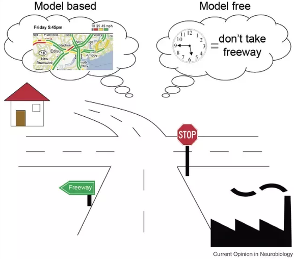
Model-free methods (DQN, A3C, DDPG, PPO, SAC) are able to find optimal policies in complex sequential decision-making problems (MDPs) by just sampling transitions: blackbox optimizer.
They suffer however from a high sample complexity, i.e. they need ridiculous amounts of samples to converge.
Model-based methods (I2A, Dreamer, MuZero) use learned dynamics to predict the future and plan the consequences of an action.
The sample complexity is lower, but learning a good model can be challenging. Inference times can be prohibitive.
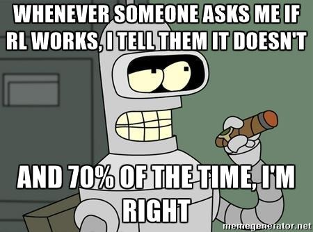
Deep RL is still very unstable
Depending on initialization, deep RL networks may or may not converge (30% of runs converge to a worse policy than a random agent).
Careful optimization such as TRPO / PPO help, but not completely.
You never know if failure is your fault (wrong network, bad hyperparameters, bug), or just bad luck.
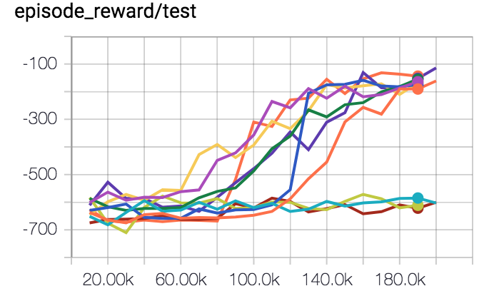
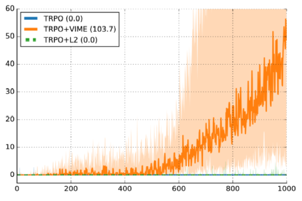
Deep RL lacks generalization to different environments
Deep RL is popular because it's the only area in ML where it's socially acceptable to train on the test set.
— Jacob Andreas (@jacobandreas) October 28, 2017
As it uses neural networks, deep RL overfits its training data, i.e. the environment it is trained on.
If you change anything to the environment dynamics, you need to retrain from scratch.
OpenAI Five collects 900 years of game experience per day on Dota 2: it overfits the game, it does not learn how to play.
Modify the map a little bit and everything is gone.
But see Meta RL - RL^2 later.
Classical methods sometimes still work better
Model Predictive Control (MPC) is able to control Mujoco robots much better than RL through classical optimization techniques (e.g. iterative LQR) while needing much less computations.
If you have a good physics model, do not use DRL. Reserve it for unknown systems, or when using noisy sensors (images). Genetic algorithms (CMA-ES) sometimes give better results than RL.
You cannot do that with deep RL (yet)
{{< youtube fRj34o4hN4I >}}RL libraries
After an initial phase with many competing frameworks, deep learning converged to pytorch and tensorflow.
The situation is not that clear in deep RL. There are still dozens of frameworks, most of them quickly unmaintained.
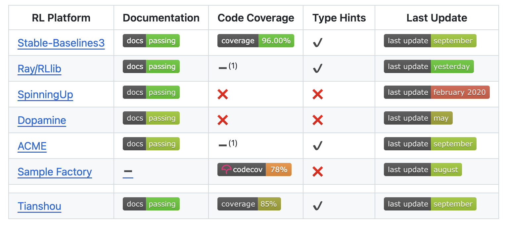
RL libraries
rllibis part of the more global ML framework Ray, which also includes Tune for hyperparameter optimization.
It has implementations in both tensorflow and Pytorch.
All major model-free algorithms are implemented (DQN, Rainbow, A3C, DDPG, PPO, SAC), including their distributed variants (Ape-X, IMPALA, TD3) but also model-based algorithms (Dreamer!)
https://docs.ray.io/en/master/rllib.html
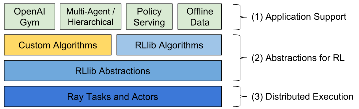
RL libraries
tianshouis a recent addition to the family. The implementation is based on pytorch and is very modular. Allows for efficient distributed RL.
Algos: DQN+/DDPG/PPO/SAC, imitation learning, offline RL…
https://github.com/thu-ml/tianshou
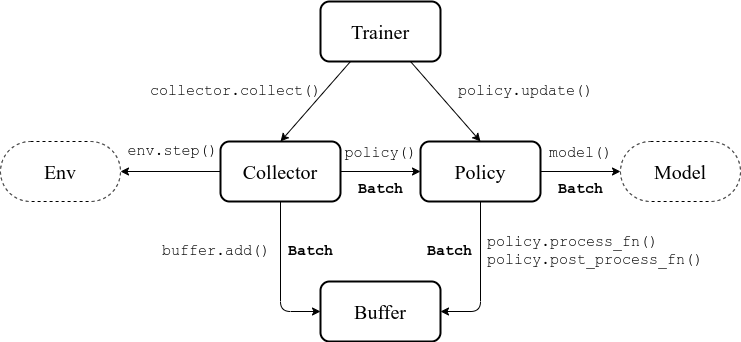
2 - Inverse RL - learning the reward function
RL maximizes the reward function you give it
RL is an optimization method: it maximizes the reward function that you provide it.
If you do not design the reward function correctly, the agent may not do what you expect.
In the Coast runners game, turbos provide small rewards but respawn very fast: it is more optimal to collect them repeatedly than to try to finish the race.
Reward functions need careful engineering
Defining the reward function that does what you want becomes an art.
RL algorithms work better with dense rewards than sparse ones. It is tempting to introduce intermediary rewards.
You end up covering so many special cases that it becomes unusable:
- Go as fast as you can but not in a curve, except if you are on a closed circuit but not if it rains…
- In the OpenAI Lego stacking paper, it was perhaps harder to define the reward function than to implement DDPG.
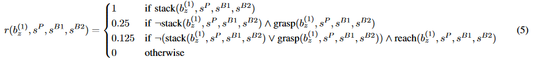
Inverse Reinforcement Learning

The goal of inverse RL is to learn from demonstrations (e.g. from humans) which reward function is maximized.
This is not imitation learning, where you try to learn and reproduce actions.
The goal if to find a parametrized representation of the reward function:
\[\hat{r}(s) = \sum_{i=1}^K w_i \, \varphi_i(s)\]
- When the reward function has been learned, you can train a RL algorithm to find the optimal policy.
3 - Intrinsic motivation and curiosity
Intrinsic motivation and curiosity
- One fundamental problem of RL is its dependence on the reward function.

When rewards are sparse, the agent does not learn much (but see successor representations) unless its random exploration policy makes it discover rewards.
The reward function is handmade, what is difficult in realistic complex problems.
Human learning does not (only) rely on maximizing rewards or achieving goals.
Especially infants discover the world by playing, i.e. interacting with the environment out of curiosity.
- What happens if I do that? Oh, that’s fun.
This called intrinsic motivation: we are motivated by understanding the world, not only by getting rewards.
Rewards are internally generated.

Intrinsic motivation and curiosity
What is intrinsically rewarding / motivating / fun? Mostly what has unexpected consequences.
If you can predict what is going to happen, it becomes boring.
If you cannot predict, you can become curious and try to explore that action.

- The intrinsic reward (IR) of an action is defined as the sensory prediction error:
\[ \text{IR}(s_t, a_t, s_{t+1}) = || f(s_t, a_t) - s_{t+1}|| \]
where \(f(s_t, a_t)\) is a forward model predicting the sensory consequences of an action.
- An agent maximizing the IR will tend to visit unknown / poorly predicted states (exploration).
Intrinsic motivation and curiosity
Is it a good idea to predict frames directly?
Frames are highly dimensional and there will always be a remaining error.

- Moreover, they can be noisy and unpredictable, without being particularly interesting.

- What can we do? As usual, predict in a latent space!
Intrinsic curiosity module (ICM)
The intrinsic curiosity module (ICM) learns to provide an intrinsic reward for a transition \((s_t, a_t, s_{t+1})\) by comparing the predicted latent representation \(\hat{\phi}(s_{t+1})\) (using a forward model) to its “true” latent representation \(\phi(s_{t+1})\).
The feature representation \(\phi(s_t)\) is trained using an inverse model predicting the action leading from \(s_t\) to \(s_{t+1}\).
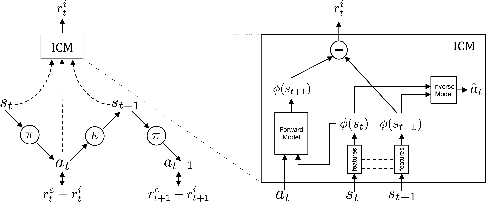
Intrinsic motivation and curiosity
{{< youtube J3FHOyhUn3A >}}Intrinsic motivation and curiosity
{{< youtube l1FqtAHfJLI >}}Additional readings
Oudeyer P-Y, Gottlieb J, Lopes M. (2016). Chapter 11 - Intrinsic motivation, curiosity, and learning: Theory and applications in educational technologies In: Studer B, Knecht S, editors. Progress in Brain Research, Motivation. Elsevier. pp. 257–284. doi:10.1016/bs.pbr.2016.05.005
Pathak D, Agrawal P, Efros AA, Darrell T. (2017). Curiosity-driven Exploration by Self-supervised Prediction. arXiv:170505363.
Burda Y, Edwards H, Pathak D, Storkey A, Darrell T, Efros AA. (2018). Large-Scale Study of Curiosity-Driven Learning. arXiv:180804355.
Aubret A, Matignon L, Hassas S. (2019). A survey on intrinsic motivation in reinforcement learning. arXiv:190806976.
4 - Hierarchical RL - learning different action levels
Hierarchical RL - learning different action levels
In all previous RL methods, the action space is fixed.
When you read a recipe, the actions are “Cut carrots”, “Boil water”, etc.
But how do you perform these high-level actions? Break them into subtasks iteratively until you arrive to muscle activations.
But it is not possible to learn to cook a boeuf bourguignon using muscle activations as actions.
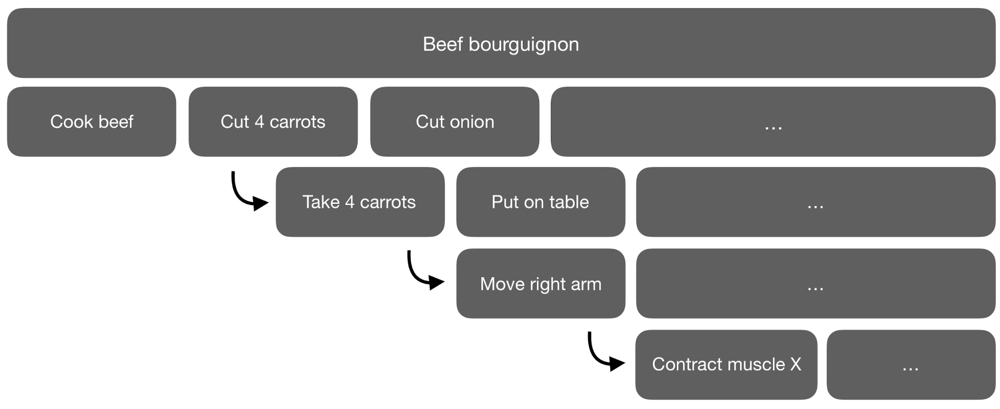
Meta-Learning Shared Hierarchies
Sub-policies (options) can be trained to solve simple tasks (going left, right, etc).
A meta-learner or controller then learns to call each sub-policy when needed, at a much lower frequency.

Hierarchical Reinforcement Learning
MLSH: Frans, K., Ho, J., Chen, X., Abbeel, P., and Schulman, J. (2017). Meta Learning Shared Hierarchies. arXiv:1710.09767.
FUN: Vezhnevets, A. S., Osindero, S., Schaul, T., Heess, N., Jaderberg, M., Silver, D., et al. (2017). FeUdal Networks for Hierarchical Reinforcement Learning. arXiv:1703.01161 .
Option-Critic architecture: Bacon, P.-L., Harb, J., and Precup, D. (2016). The Option-Critic Architecture. arXiv:1609.05140.
HIRO: Nachum, O., Gu, S., Lee, H., and Levine, S. (2018). Data-Efficient Hierarchical Reinforcement Learning. arXiv:1805.08296.
HAC: Levy, A., Konidaris, G., Platt, R., and Saenko, K. (2019). Learning Multi-Level Hierarchies with Hindsight. arXiv:1712.00948.
Spinal-cortical: Heess, N., Wayne, G., Tassa, Y., Lillicrap, T., Riedmiller, M., and Silver, D. (2016). Learning and Transfer of Modulated Locomotor Controllers. arXiv:1610.05182.
5 - Meta Reinforcement learning - RL^2
Meta RL: Learning to learn
- Meta learning is the ability to reuse skills acquired on a set of tasks to quickly acquire new (similar) ones (generalization).


Meta RL: Learning to learn

Meta RL is based on the idea of fast and slow learning:
Slow learning is the adaptation of weights in the NN.
Fast learning is the adaptation to changes in the environment.
A simple strategy developed concurrently by (Wang et al. 2016) and (Duan et al. 2016) is to have a model-free algorithm (e.g. A3C) integrate with a LSTM layer not only the current state \(s_t\), but also the previous action \(a_{t-1}\) and reward \(r_t\).
The policy of the agent becomes memory-guided: it selects an action depending on what it did before, not only the state.

Meta RL: Learning to learn
The algorithm is trained on a set of similar MDPs:
Select a MDP \(\mathcal{M}\).
Reset the internal state of the LSTM.
Sample trajectories and adapt the weights.
Repeat 1, 2 and 3.
Meta RL: Learning to learn
The meta RL can be be trained an a multitude of 2-armed bandits, each giving a reward of 1 with probability \(p\) and \(1-p\).
Left is a classical bandit algorithm, right is the meta bandit:
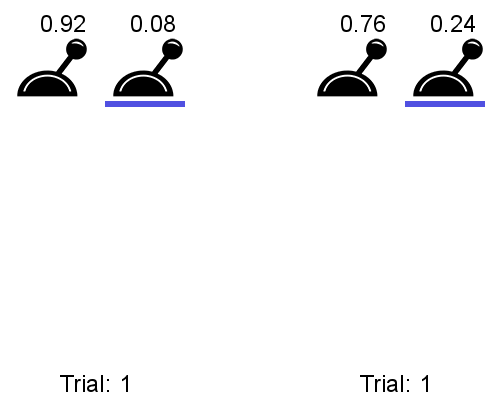
The meta bandit has learned that the best strategy for any 2-armed bandit is to sample both actions randomly at the beginning and then stick to the best one.
The meta bandit does not learn to solve each problem, it learns how to solve them.
Model-Based Meta-Reinforcement Learning for Flight with Suspended Payloads
{{< youtube AP5FgKjFpvQ >}}Additional readings
Meta RL: Wang JX, Kurth-Nelson Z, Tirumala D, Soyer H, Leibo JZ, Munos R, Blundell C, Kumaran D, Botvinick M. (2016). Learning to reinforcement learn. arXiv:161105763.
RL\(^2\) Duan Y, Schulman J, Chen X, Bartlett PL, Sutskever I, Abbeel P. 2016. RL\(^2\): Fast Reinforcement Learning via Slow Reinforcement Learning. arXiv:161102779.
MAML: Finn C, Abbeel P, Levine S. (2017). Model-Agnostic Meta-Learning for Fast Adaptation of Deep Networks. arXiv:170303400.
PEARL: Rakelly K, Zhou A, Quillen D, Finn C, Levine S. (2019). Efficient Off-Policy Meta-Reinforcement Learning via Probabilistic Context Variables. arXiv:190308254.
POET: Wang R, Lehman J, Clune J, Stanley KO. (2019). Paired Open-Ended Trailblazer (POET): Endlessly Generating Increasingly Complex and Diverse Learning Environments and Their Solutions. arXiv:190101753.
MetaGenRL: Kirsch L, van Steenkiste S, Schmidhuber J. (2020). Improving Generalization in Meta Reinforcement Learning using Learned Objectives. arXiv:191004098.
Botvinick M, Ritter S, Wang JX, Kurth-Nelson Z, Blundell C, Hassabis D. (2019). Reinforcement Learning, Fast and Slow. Trends in Cognitive Sciences 23:408–422. doi:10.1016/j.tics.2019.02.006
Additional resources
6 - Offline RL
Offline RL
Even off-policy algorithms need to interact with the environment: the behavior policy is \(\epsilon\)-soft around the learned policy.
Is it possible to learn purely offline from recorded transitions using another policy (experts)? Data efficiency.
This would bring safety: the agent would not explore dangerous actions.
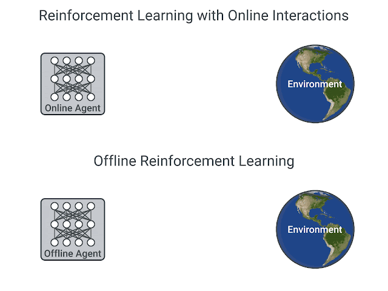
D4RL
- D4RL (https://sites.google.com/view/d4rl/home) provides offline data recorded using expert policies to test offline algorithms.
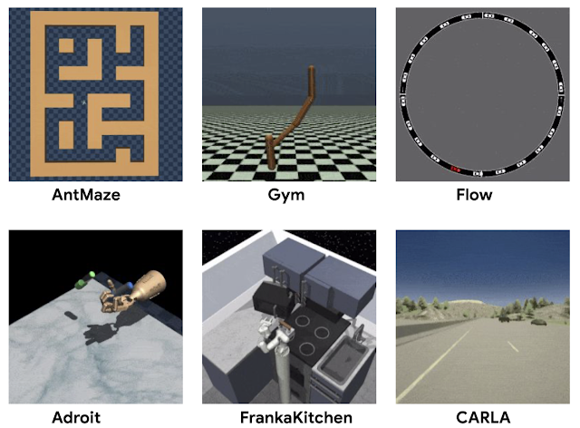
Behavioral cloning
As no exploration is allowed, the model is limited by the quality of the data: if the acquisition policy is random, there is not much to hope.
If we have already a good policy, but slow or expensive to compute, we could try to transfer it to a fast neural network.
If the policy is a human expert, it is called learning from demonstrations (lfd) or imitation learning.
The simplest approach to offline RL is behavioral cloning: simply supervised learning of \((s, a)\) pairs…

Dave2 : NVIDIA’s self-driving car
{{< youtube qhUvQiKec2U >}}Distribution shift
The main problem in offline RL is the distribution shift: what if the trained policy assigns a non-zero probability to a \((s, a)\) pair that is outside the training data?
Most offline RL methods are conservative methods, which try to learn policies staying close to the known distribution of the data. Examples:
- Batch-Contrained deep Q-learning (model-free), MOREL (model-based)…
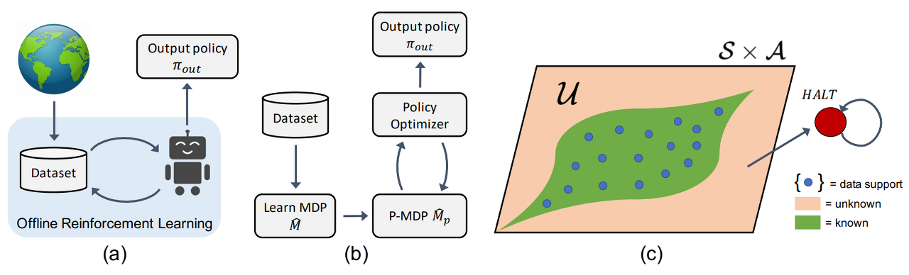
Decision transformer
Transformers are the new SotA method to transform sequences into sequences.
Why not sequences of states into sequences of actions?
The decision transformer takes complete offline trajectories as inputs (s, a, r, s…) and predicts autoregressively the next action.

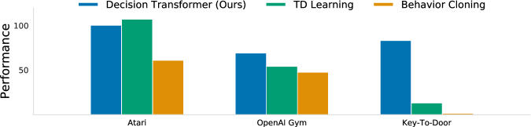
Transformers as World models
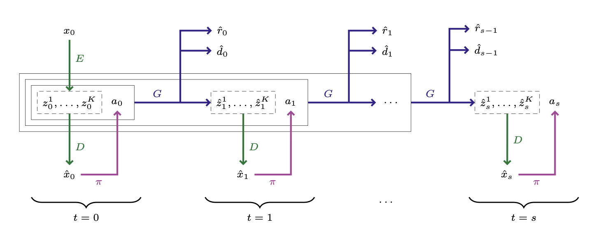
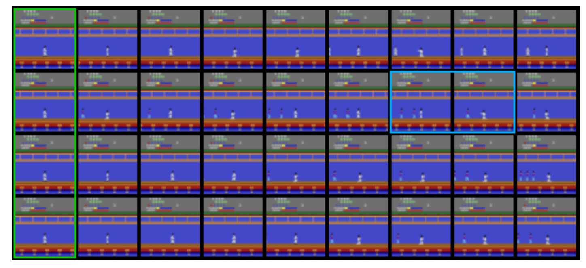
Diffusion policy
The latest tool in generative AI (learning distributions like in GAN and VAE) is diffusion models, which learn to generate data (images) by iteratively denoising noisy samples.
They are extremely easy to train and allow to model action sequences from demonstrations.
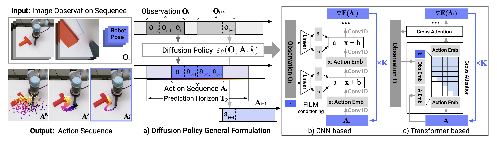
Additional readings
Levine, S., Kumar, A., Tucker, G., & Fu, J. (2020). Offline Reinforcement Learning: Tutorial, Review, and Perspectives on Open Problems. ArXiv:2005.01643 [Cs, Stat]. http://arxiv.org/abs/2005.01643
Kidambi, R., Rajeswaran, A., Netrapalli, P., & Joachims, T. (2021). MOReL: Model-Based Offline Reinforcement Learning. ArXiv:2005.05951 [Cs, Stat]. http://arxiv.org/abs/2005.05951
Fujimoto, S., Meger, D., & Precup, D. (2019). Off-Policy Deep Reinforcement Learning without Exploration. Proceedings of the 36th International Conference on Machine Learning, 2052–2062. https://proceedings.mlr.press/v97/fujimoto19a.html
Chen, L., Lu, K., Rajeswaran, A., Lee, K., Grover, A., Laskin, M., Abbeel, P., Srinivas, A., & Mordatch, I. (2021). Decision Transformer: Reinforcement Learning via Sequence Modeling. ArXiv:2106.01345 [Cs]. http://arxiv.org/abs/2106.01345
Micheli, V., Alonso, E., & Fleuret, F. (2022). Transformers are Sample Efficient World Models (arXiv:2209.00588). arXiv. https://doi.org/10.48550/arXiv.2209.00588